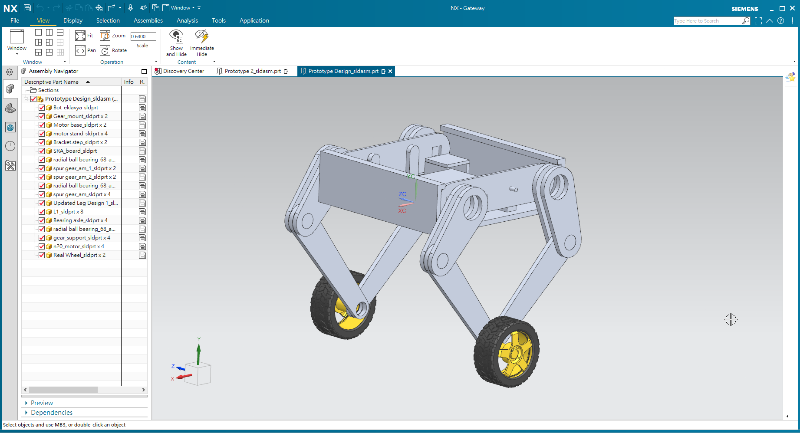

Parts <<
Previous Next >> Quadruped
BonW
Balance on Wheels
https://github.com/mdecycu/Balance_On_Wheels

專案第一階段執行過程:
- 利用 Solvespace 建立零組件
- 將零組件轉入 CoppeliaSim
- 根據系統零組件從屬關係進行零件組立
- 針對系統動態運動模型運算簡化零件
- 進行初步開放系統的運動模擬
- 加入所需致動器與感測器
- 針對系統運動設定零件起始位置與機構運動範圍
- 利用 ZMQ Remote API 程式進行回授控制系統設計
專案第二階段執行過程:
- 利用 NX2312 建立零組件
- 將零組件轉入 CoppeliaSim
- 根據系統零組件從屬關係進行零件組立
- 針對系統動態運動模型運算簡化零件
- 進行初步開放系統的運動模擬
- 加入所需致動器與感測器
- 針對系統運動設定零件起始位置與機構運動範圍
- 利用 ZMQ Remote API 程式進行回授控制系統設計
專案第三階段執行過程:
- 利用 NXOpen 評估能否採二次程式開發流程建立系統零組件
- 利用 CoppeliaSim 的 Simple XML 模型檔案格式, 評估能否直接利用 NX2312 轉出的零件 STL 檔案建立模擬場景
- 結合 Jupyterlab 的 collaborative 模式 (或 Linux 上的 Jupyterhub server), 評估將潛在客戶導入協同產品設計的可行性
Parts <<
Previous Next >> Quadruped